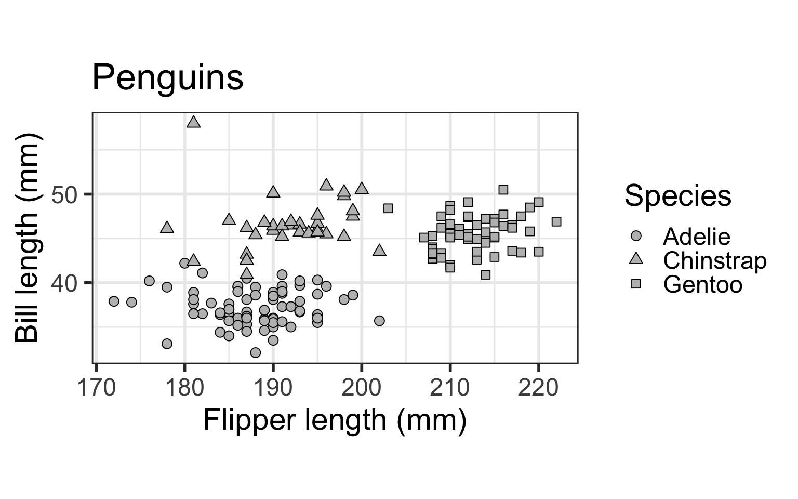
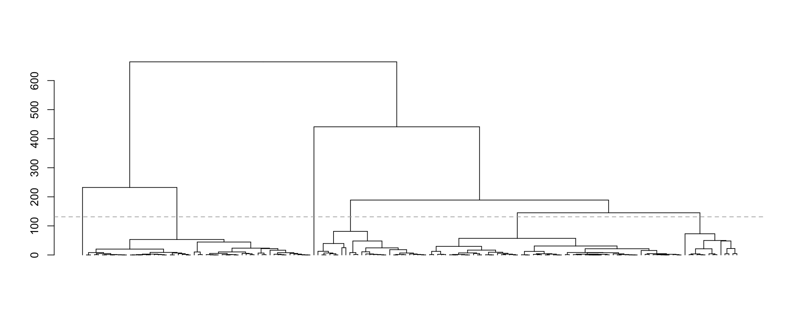
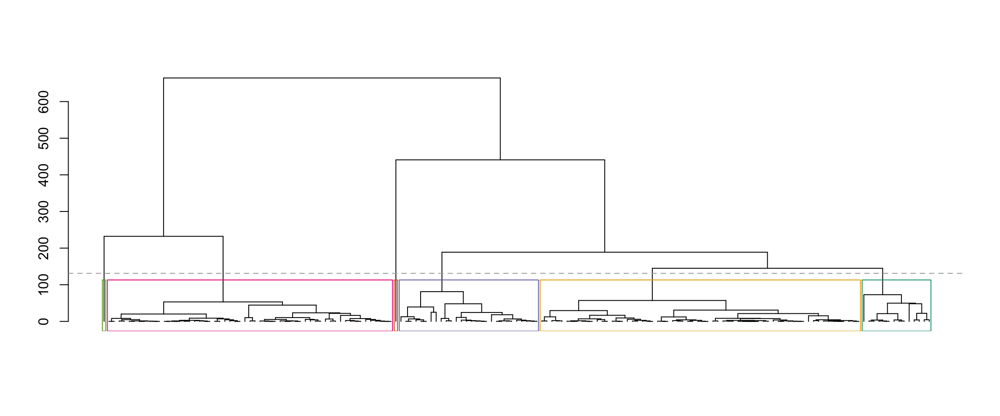
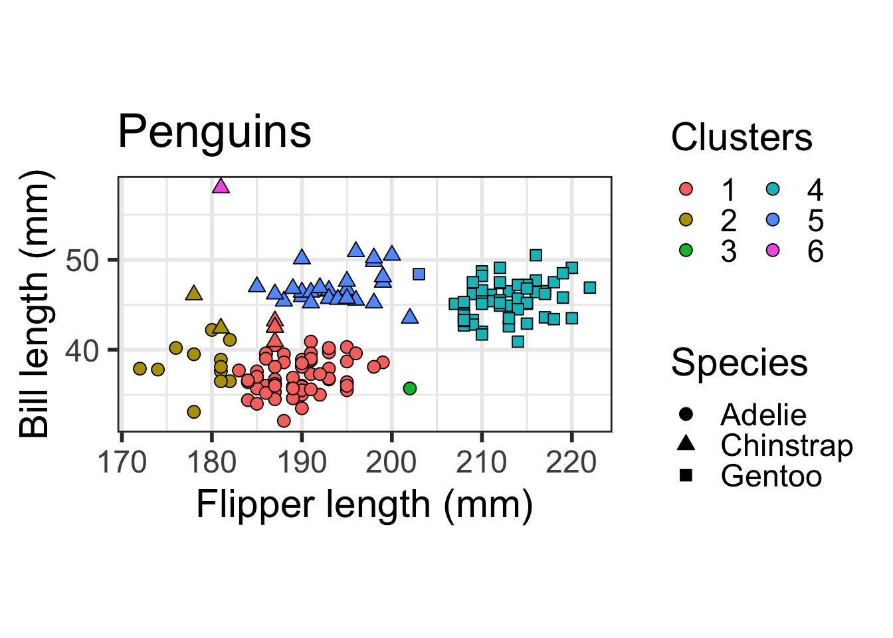
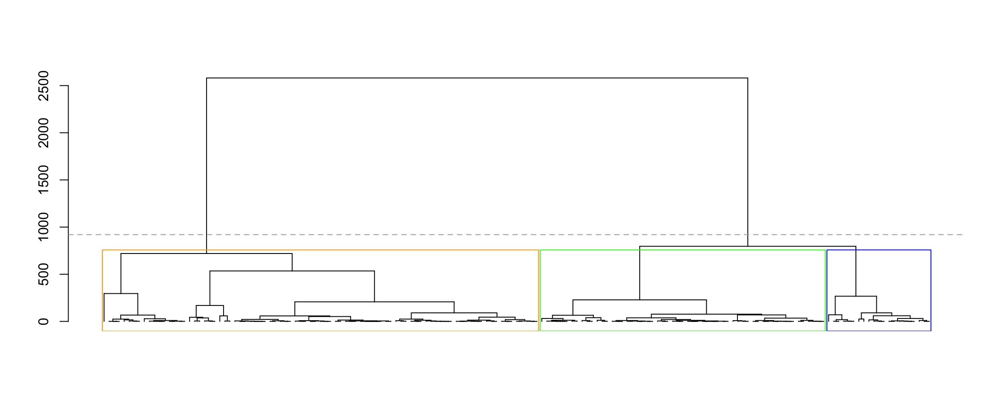

require(clusterpval)
require(fastcluster)Hierarchical Clustering Tutorial
In this tutorial, we demonstrate how to use the clusterpval package to compute p-values for a difference in means between two clusters obtained by applying hierarchical clustering (with squared Euclidean distance) to a data set.
First, load the package:
We also load the fastclusterpackage, which is a highly computationally efficient drop-in replacement for the hclust function in the stats package. This IS NOT optional if you are using complete linkage hierarchical clustering, but IS optional if you are using any other linkage (e.g. average).
Plotting and clustering data
We will illustrate the software on a subset of the Palmer penguins data, which contains data on three species of penguins: Adelie, Chinstrap, and Gentoo.
require(palmerpenguins)
require(ggplot2)
options(ggplot2.discrete.colour=list(RColorBrewer::brewer.pal(6, "Dark2")[c(6, 1, 5, 4, 3, 2)]))
dat <- penguins[complete.cases(penguins), ]
dat <- dat[dat$sex == "female", c(1, 3, 5)]
ggplot(dat) + geom_point(aes(x=flipper_length_mm, y = bill_length_mm,
shape=as.factor(species)), size = 3, fill="grey", colour="black") +
scale_shape_manual(name="Species", values=c(21, 24, 22)) +
ylab("Bill length (mm)") + xlab("Flipper length (mm)") + coord_fixed() +
theme_bw(base_size=22) + ggtitle("Penguins") + theme(legend.position="right")
Let’s cluster the data using average linkage hierarchical clustering with squared Euclidean distance. We plot the dendrogram, and cut the dendrogram to get six clusters.
X <- as.matrix(dat[, -c(1)]) # remove species and convert to matrix
hcl <- hclust(dist(X, method="euclidean")^2, method="average")
plot(as.dendrogram(hcl), leaflab="none")
abline(h=(hcl$height[nrow(X) - 6] + 50), lty="dashed", col="darkgrey")
Now let’s pick pairs of clusters to test. We “name” the six clusters according to the output of the cutree function, which is not always the same as left-to-right ordering in the dendrogram. To figure out what each cluster in the dendrogram is called, we can use the rect_hier_clusters function to put coloured rectangles around the six clusters.
plot(as.dendrogram(hcl), leaflab="none")
abline(h=(hcl$height[nrow(X) - 6] + 50), lty="dashed", col="darkgrey")
rect_hier_clusters(hcl, k=6, which=1:6, border=RColorBrewer::brewer.pal(6, "Dark2")[c(6, 1, 5, 4, 3, 2)])
So visually, if we would like to test for a difference in means between the blue and green clusters, we would set k1 to be 4 and k2 to be 5. (You can see this from the order of the colors in the “border” argument above.)
table(dat$species, cutree(hcl,k=6))
1 2 3 4 5 6
Adelie 60 12 1 0 0 0
Chinstrap 4 2 0 0 27 1
Gentoo 0 0 0 57 1 0ggplot(dat) + geom_point(aes(x=flipper_length_mm, y = bill_length_mm,
shape=as.factor(species), fill=as.factor(cutree(hcl, 6))), size = 3, colour="black") + scale_fill_discrete(name="Clusters", guide=guide_legend(ncol=2, override.aes=list(shape=21))) +
scale_shape_manual(name="Species", values=c(21, 24, 22), guide=guide_legend(override.aes=list(fill="black"))) +
ylab("Bill length (mm)") + xlab("Flipper length (mm)") + coord_fixed() +
theme_bw(base_size=22) + ggtitle("Penguins") + theme(legend.position="right") 
You can see that Clusters 1 and 2 both mostly contain Adelie penguins, Cluster 4 mostly contains Gentoo Penguins, and Cluster 5 mostly contains Chinstrap penguins. Clusters 3 and 6 contain one penguin each.
Testing for a difference in means between clusters
We’ll test for a difference in means between Clusters 1 and 2 (both containing Adelie penguins), and between Clusters 4 and 5 (containing mostly Gentoo and Chinstrap penguins, respectively) using the test_hier_clusters_exact function. By default, this function plugs in a simple estimate of \(\sigma^2\) given by \(\sum \limits_{i=1}^n \sum \limits_{j=1}^p (x_{ij} - \bar{x}_j)^2/(np - p)\), where \(\bar{x}_j\) is the mean of the \(j\)th feature. Note that if there really are clusters in the data, then this estimate will be larger than it should be, but if there really are no clusters in the data, then this estimate will be unbiased and consistent.
test_hier_clusters_exact(X, link="average", K=6, k1=1, k2=2, hcl=hcl)$stat
[1] 10.41961
$pval
[1] 0.8667368
$trunc
Object of class Intervals
2 intervals over R:
(10.3122059802435, 16.3904453676166)
(131.758884280403, Inf)test_hier_clusters_exact(X, link="average", K=6, k1=4, k2=5, hcl=hcl)$stat
[1] 18.86523
$pval
[1] 0.0004528178
$trunc
Object of class Intervals
2 intervals over R:
(16.8300111004978, 21.6868651391918)
(63.4548051430845, Inf)We now have the test statistic, exact p-value, and conditioning set \(\mathcal{S}\). We get a small p-value when testing for a difference in means between clusters containing different species, and a large p-value when testing for a difference in means between clusters containing the same species.
Now, let’s try complete linkage hierarchical clustering. We plot the dendrogram, and cut the dendrogram to get three clusters.
hcl <- hclust(dist(X, method="euclidean")^2, method="complete")
plot(as.dendrogram(hcl), leaflab="none")
abline(h=(hcl$height[nrow(X) - 3] + 200), lty="dashed", col="darkgrey")
rect_hier_clusters(hcl, k=3, which=1:3, border=c("orange", "blue", "green"))
table(dat$species, cutree(hcl, 3))
1 2 3
Adelie 67 6 0
Chinstrap 20 14 0
Gentoo 0 1 57Observe that Clusters 1 and 2 (which are orange and blue in the dendrogram above) are both mixes of Adelie and Chinstrap penguins, and Cluster 3 (which is green in the dendrogram above) is largely Gentoo penguins. We’ll test for a difference in means between Clusters 1 and 3 using the test_complete_hier_clusters_approx function. This approximately computes a p-value for the difference in means using Monte Carlo sampling. By default, this function also plugs in the simple estimate of \(\sigma^2\) given by \(\sum \limits_{i=1}^n \sum \limits_{j=1}^p (x_{ij} - \bar{x}_j)^2/(np-p)\).
set.seed(123)
test_complete_hier_clusters_approx(X, K=3, k1=2, k2=3, ndraws=10000, hcl=hcl)$stat
[1] 15.36703
$pval
[1] 0.004396524
$stderr
[1] 0.0004490352In the results above, the estimated p-value comes from Monte Carlo, which means that it is subject to Monte Carlo sampling error. Thus, we also report a standard error estimate for the p-value, that captures the uncertainty due to Monte Carlo sampling error. If more precision is desired, you could adjust the number of Monte Carlo samples using the ndraws argument of test_complete_hier_clusters_approx.
Observe that the estimated p-value for a difference in means between Cluster 1 and Cluster 3 is small - this is good, because the penguin species are different in the two clusters.
© 2020 Lucy L. Gao (lucylgao at uwaterloo dot ca)